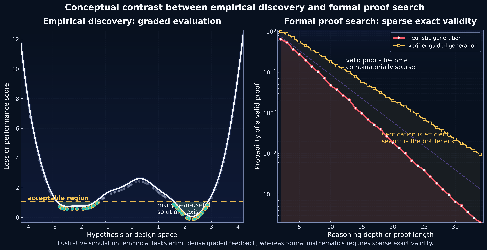
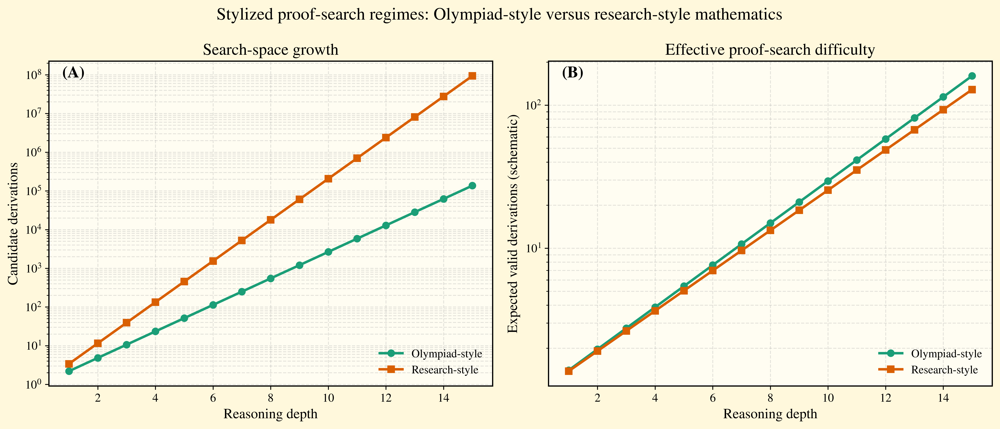
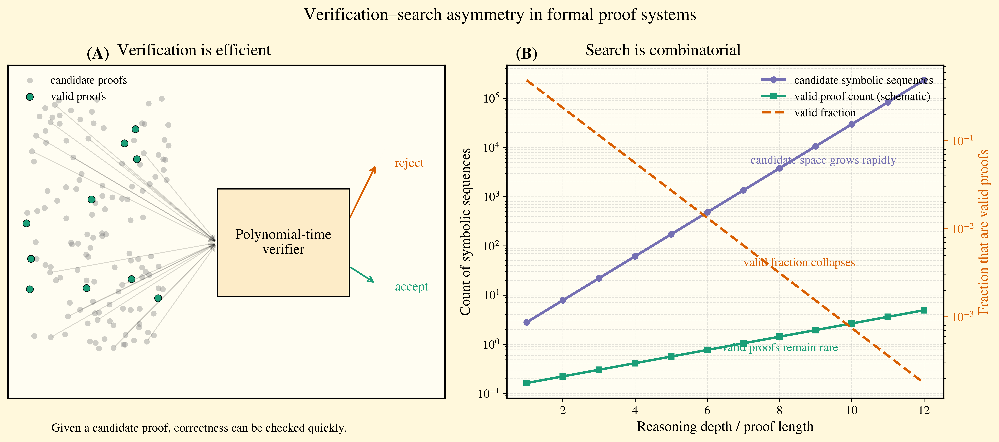

On the tension between graded empirical feedback, exact deductive validity, and the place of AI systems between them.
Mathematics and empirical science do not reward discovery in the same way. In empirical science, models can improve through dense graded feedback and approximate success. In mathematics, validity is sparse and exact: a proof is either correct or it is not. This asymmetry helps explain why AI systems often advance rapidly in scientific modeling while facing a qualitatively different barrier in formal mathematical reasoning.
Himanshu Singh
Empirical science admits partial success, approximation, and graded evaluation. Mathematics demands exact validity under formal deduction. AI systems therefore enter the two domains under different epistemic conditions: in one, useful progress can accumulate before complete justification; in the other, the bottleneck is the discovery of a valid proof itself. The resulting asymmetry is not just practical. It is structural.
The figure below contrasts two knowledge regimes. On the left, empirical tasks admit many locally useful regions and continuous performance gradients. On the right, valid proofs become combinatorially sparse as reasoning depth increases, even when verification itself remains efficient.

Conceptual contrast. Empirical science can reward approximate progress through graded evaluation, whereas formal mathematics requires exact logical validity. This difference changes the search landscape confronted by AI systems.
Even within mathematics, the difficulty of proof search is not uniform. Short-horizon, olympiad-style reasoning and open-ended, research-style reasoning generate different growth rates in candidate derivations, even when both remain exact symbolic tasks.

Stylized proof-search regimes. As reasoning depth grows, research-style mathematical search can induce a far larger candidate space than olympiad-style settings, intensifying the difficulty of finding a valid derivation.
Once a candidate proof is proposed, checking correctness can be comparatively efficient. This makes formal systems attractive as verifiable endpoints, but it does not solve the harder problem: how to discover the proof in the first place.
The space of candidate symbolic sequences grows rapidly, while the fraction that correspond to valid proofs collapses. AI systems can therefore face a search problem whose difficulty is qualitatively different from ordinary empirical optimization.

Verification–search asymmetry. The cost of checking a proof can remain small even as the discovery process becomes combinatorial. This explains why verifier-guided systems may help, but do not erase the underlying sparsity of exact validity.
Modern AI systems are trained through empirical optimization, yet are increasingly applied to domains that demand formal correctness. This creates a structural mismatch between how models learn and how validity is defined.
Neural models improve through gradient-based learning and dense feedback signals. Formal mathematics, however, requires discrete logical correctness, not approximate improvement.
The availability of efficient verifiers does not remove the combinatorial nature of proof discovery. AI systems may generate candidates rapidly, but valid proofs remain sparse.
In empirical domains, approximate correctness is useful. Models can improve incrementally, making scientific discovery more accessible to data-driven systems.
The future likely lies in combining empirical generation with formal verification, bridging statistical learning and symbolic reasoning.
The distinction between empirical and formal knowledge systems suggests that no single learning paradigm will dominate both domains. Instead, progress will come from systems that respect this asymmetry: combining statistical learning for exploration with symbolic methods for verification and structure. Understanding this boundary is not merely philosophical. It is central to the design of future AI systems.
Understanding this asymmetry is not philosophical—it is architectural.
This project page is a visual companion to the underlying note. The full PDF carries the broader argument, supporting discussion, and additional framing around AI, scientific discovery, and mathematical reasoning.